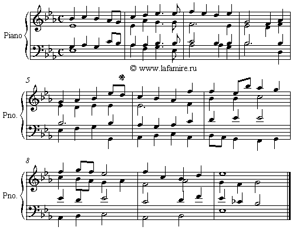

|
См. также Гармонические стили композиторов
См. также Анализ целостный, ноты и Анализ гармонический муз. произведений
Решение задачи.

Способ решения.
1. Определяем тональность задачи - это Ми-бемоль мажор.
2. Строим аккорды, которые уже прошли в курсе Гармонии Алексеева. Это Главные трезвучия с обращениями, Кадансовый квартсекстаккорд, Доминантсептаккорд с обращениями, Трезвучие и Секстаккорд II ступени, Септаккорд II ступени с обращениями, Трезвучие VI ступени с обращениями, Вводные септаккорды с обращениями, Доминантнонаккорд, наконец, не забываем про знак гармонического мажора. Ставим обозначения к аккордам.
3. А сейчас - ключ к решению задачи. Строим аккорды, которые непосредственно относятся к теме задачи. Это менее употребительные аккорды доминантовой группы - Трезвучие III ступени, VII секстаккорд, Доминанты с секстой (трезвучие, септаккорд, нонаккорд) и вводный септаккорд с квартой (вместо терции).
4.Ищем (в учебнике) отрезки мелодии, где могли бы появиться эти аккорды. Естественно, транспонируем в нужную нам тональность.
Для Трезвучия III ступени это могут быть отрезки типа:
1) ми-бемоль - ре-до-си-бемоль (оборот в мажоре, соответствующий фригийскому в миноре),где трезвучие III ступени гармонизует ноту "ре", на первую ноту "ми-бемоль" ставится либо T, либо VI. На ноту "до"- IV,редко - VI, на ноту "си-бемоль" - T или D.
2) оборот си-бемоль-си-бемоль-си-бемоль, который гармонизуется T-III-T.
3) оборот ми-бемоль-ми-бемоль-ре-ре-ми-бемоль, который гармонизуется T-VI-III-D43-T
Для секстаккорда VII ступени это следующие отрезки:
1) ми-бемоль-фа-соль, который гармонизуется T6-VII6-T
2) до-ре-ми-бемоль, который гармонизуется IV-VII6-T или IV-VII6-T6.
Для Доминантовых аккордов с секстой:
1) соль-фа-ми-бемоль - D6 -D7-T, D6 -D2-T6, D665 -D65-T, D62-D2-T6,
D67-D7-T, D6 -D7-VI и т.д.
2) фа-соль-ми-бемоль -гармонизуется D- D67-T, D2-D62-T6, D7- D67-T, D65- D665-T, D-D62-T6, D7-D67-VI и т.д.
D69 выбивается из привычного своего вида (си-бемоль -ре- ля-бемоль -до) - с пропущенной квинтой, так как секста должна заменить именно квинту. Получается два его варианта: си-бемоль - ре- соль-до или си-бемоль--ля-бемоль-соль-до. Аккорд си-бемоль - ре- соль-до лучше разрешить в доминантсептаккорд си-бемоль - ре -ля-бемоль-си-бемоль.Традиционного разрешения ноны на ступень вниз в аккорде си-бемоль-ля-бемоль-соль-до не получится. Придется вести до в ре и дальше в ми-бемоль. Соответственно, надо искать отрезки в мелодии "до-си-бемоль-си-бемоль" или "до-ре-ми-бемоль" .
Для вводного септаккорда с квартой, который обычно используется в виде терцквартаккорда (VII443), в мажоре - в гармоническом виде, это соль-фа-соль или соль-соль, которые гармонизуются как VII443гарм-VII43гарм-T либо VII443гарм-T.
5.Ищем в мелодии задачи эти (подчеркнутые) отрезки. Таких отрезков -два: первый - во втором такте-"до-ре-ми-бемоль", второй - в восьмом такте - соль-фа-ми-бемоль.
6. Разберемся теперь с формой задачи, с цезурами и каденциями. В мелодии 10 тактов. Соответственно, она неквадратна. Мы можем предположить 2 варианта ее строения. Первый вариант: в мелодии 2 предложения по 5 тактов, значит, цезура будет между 5 и 6 тактами. Второй вариант: первое предложение занимает 4 такта, а второе расширено до 6 тактов, соответственно цезура будет между 4 и 5 тактами. Проверим наши предположения. Как мы должны их проверить? Поискать в мелодии каденционные обороты -в 4 такте и в 5 такте: си-бемоль либо фа, либо ре, либо си-бемоль-си-бемоль, либо соль-фа, либо ми-бемоль-ре. Гарионизуются они либо как D, либо как K64 -D.
Такой оборот обнаруживается в 4 такте - соль-фа, гармонизуется как K64 -D.
Последняя каденция и так понятна -си-бемоль-ре-ми-бемоль (три последние ноты), гармонизуется как D7 с перемещением и T.
Теперь посмотрим, за счет чего сделано расширение второго предложения - это может быть либо секвенция, либо прерванная каденция (прерванный оборот). В 8 такте и обнаруживатся такая прерванная каденция (соль-фа-ми-бемоль), после которой досказывается еще 2 такта. Это один из оборотов, которые мы искали по теме задачи. Он гармонизуется как D6 -D7-VI.
С каденциями разобрались. Теперь вернемся к найденному обороту во втором такте -"до-ре-ми-бемоль". Поскольку он располагается не в каденционной зоне, а внутри построения, нет смысла гармонизовать его с помощью D69. Гармонизуем его с помощью VII6 - либо как IV-VII6-T , либо как IV-VII6-T6.
В данном решении задачи выбран вариант IV-VII6-T6, поэтому повторяющаяся нота "ми-бемоль"(последняя нота второго такта) гармонизована как T. Можно было выбрать вариант IV-VII6-T, тогда последняя нота была бы гармонизована трезвучием VI ступени.
Что касается остальных оборотов, использованных в задаче, то здесь нужно помнить правила и обороты из пройденных тем, таких как скачки терций, кадансовый квартсекстаккорд, вспомогательные и проходящие квартсекстаккорды, септаккорд II ступени с обращениями, гармонический мажор, доминантсептаккорд с обращениями, соединение 2-х секстаккордов, соединение трезвучия с секстаккордом.
Гамаюн.
|